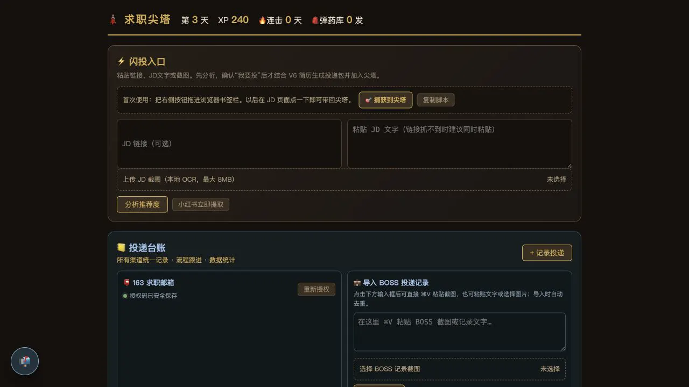

PERSONAL OPERATIONS · LOCAL TOOL
求职尖塔
把分散的小红书岗位、招聘网站记录、投递材料和邮件反馈放进同一套本地工作流。它用“尖塔”与经验值建立节奏感，但核心不是游戏化，而是减少重复整理，并让每次投递都有来源、状态和下一步。
当前状态：持续迭代中的个人工具。岗位捕获、投递台账、邮件扫描和状态记录已能独立工作，跨来源去重与自动匹配仍在真实使用中校正。
本地运行数据与求职材料留在电脑中
多来源链接、JD 文字、截图与历史记录
人工确认分析、投递和发送均保留最后确认
迭代中以真实求职过程持续修正
工作台
首页将“发现岗位”和“跟进投递”放在同一视野内。新岗位可由链接、JD 文本或截图进入分析，确认后才加入台账；既有申请则按状态、渠道和下一步继续跟踪。

系统组成
捕获
从小红书、招聘页、JD 文字或截图中收集岗位，保留原始来源。
整理
提取公司、岗位、渠道与匹配点，并对重复信息做保守合并。
行动
生成待核对的投递材料，记录申请状态、下一步和跟进时间。
反馈
邮件雷达识别重要回复，再由人工确认状态变化与后续动作。
为什么仍是实验
这个工具已经进入日常使用，但还不是稳定产品。不同平台的字段和页面结构持续变化，邮件与岗位的自动匹配也可能出现误判。因此系统刻意保留人工确认，不自动提交申请或发送邮件。下一阶段重点是收束最小稳定闭环，而不是继续堆叠入口。